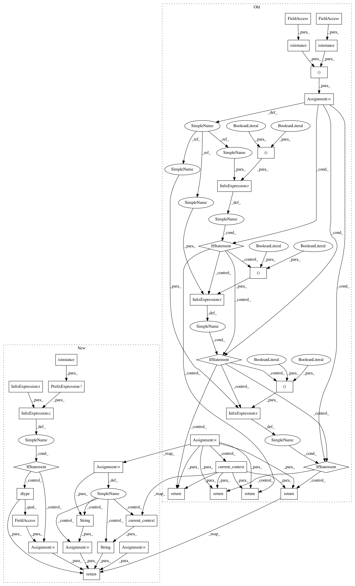

0d87aa868a723719e6e95ab8c08d7a473b60f378,python/mxnet/ndarray/numpy/random.py,,uniform,#Any#Any#Any#Any#Any#Any#,93
Before Change
Drawn samples from the parameterized uniform distribution.
from ...numpy import ndarray as np_ndarray
input_type = (isinstance(low, np_ndarray), isinstance(high, np_ndarray))
if dtype is None:
dtype = "float32"
if ctx is None:
ctx = current_context()
if size == ():
size = None
if input_type == (True, True):
return _npi.uniform(low, high, low=None, high=None, size=size,
ctx=ctx, dtype=dtype, out=out)
elif input_type == (False, True):
return _npi.uniform(high, low=low, high=None, size=size,
ctx=ctx, dtype=dtype, out=out)
elif input_type == (True, False):
return _npi.uniform(low, low=None, high=high, size=size,
ctx=ctx, dtype=dtype, out=out)
else:
return _npi.uniform(low=low, high=high, size=size,
ctx=ctx, dtype=dtype, out=out)
def normal(loc=0.0, scale=1.0, size=None, dtype=None, ctx=None, out=None):
rDraw random samples from a normal (Gaussian) distribution.
Samples are distributed according to a normal distribution parametrized
After Change
if dtype is None:
dtype = "float32"
if ctx is None:
ctx = str(current_context())
else:
ctx = str(ctx)
if dtype is not None and not isinstance(dtype, str):
dtype = np.dtype(dtype).name
if size == ():
size = None
return _api_internal.uniform(low, high, size, ctx, dtype, out)
def normal(loc=0.0, scale=1.0, size=None, dtype=None, ctx=None, out=None):
rDraw random samples from a normal (Gaussian) distribution.
In pattern: SUPERPATTERN
Frequency: 3
Non-data size: 36
Instances
Project Name: apache/incubator-mxnet
Commit Name: 0d87aa868a723719e6e95ab8c08d7a473b60f378
Time: 2020-04-09
Author: 54654391+JiangZhaoh@users.noreply.github.com
File Name: python/mxnet/ndarray/numpy/random.py
Class Name:
Method Name: uniform
Project Name: apache/incubator-mxnet
Commit Name: 0d87aa868a723719e6e95ab8c08d7a473b60f378
Time: 2020-04-09
Author: 54654391+JiangZhaoh@users.noreply.github.com
File Name: python/mxnet/ndarray/numpy/random.py
Class Name:
Method Name: normal
Project Name: apache/incubator-mxnet
Commit Name: 0d87aa868a723719e6e95ab8c08d7a473b60f378
Time: 2020-04-09
Author: 54654391+JiangZhaoh@users.noreply.github.com
File Name: python/mxnet/ndarray/numpy/random.py
Class Name:
Method Name: gamma
Project Name: apache/incubator-mxnet
Commit Name: 0d87aa868a723719e6e95ab8c08d7a473b60f378
Time: 2020-04-09
Author: 54654391+JiangZhaoh@users.noreply.github.com
File Name: python/mxnet/ndarray/numpy/random.py
Class Name:
Method Name: uniform